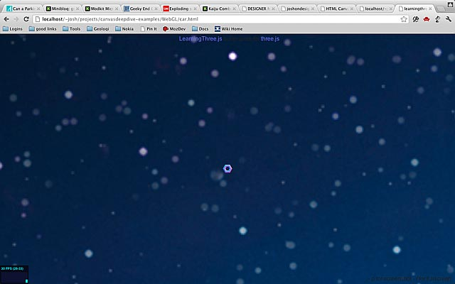
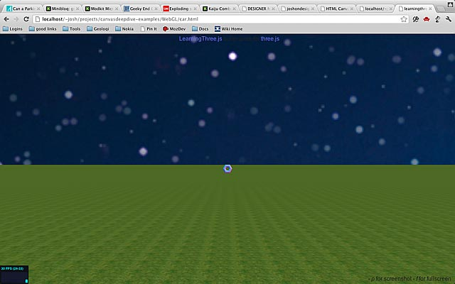
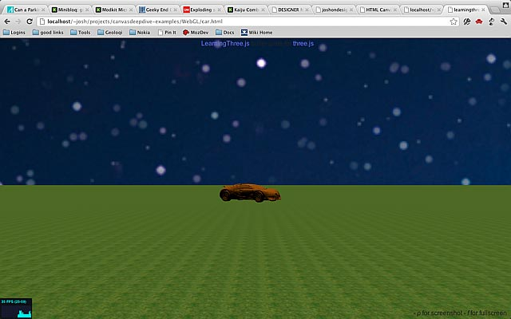

WebGL-практикум с ThreeJS: 3D автомобиль
Создание неба
Для этого практикума мы создадим новую сцену: автомобиль, который ездит по большой травянистой равнине под звёздным небом. Взято из серии великолепных постов блога Джерома, который также создал построитель шаблона и tQuery, который как jQuery, но для ThreeJS (оригинальная серия).
Начните с нового шаблона из BoilerPlate Builder. Теперь давайте добавим небо. Самый простой способ сделать это — просто поставить картинки неба на сторонах большого куба. Хитрость состоит в том, что мы установим остальной мир внутрь куба. Начнём с загрузки изображений в единую текстуру куба:
// добавляем карту звёздного неба
// загружаем изображения неба
var urls = [
"images/sky1.png",
"images/sky1.png",
"images/sky1.png",
"images/sky1.png",
"images/sky1.png",
"images/sky1.png",
];
var textureCube = THREE.ImageUtils.loadTextureCube(urls);Изображение sky1.png входит в пример кода для скачивания.
Теперь нам нужен шейдер куба чтобы нарисовать его стандартным путём. Обратите внимание, что мы устанавливаем текстуру tCube в нашу текстуру.
// настройка шейдера куба
var shader = THREE.ShaderUtils.lib["cube"];
var uniforms = THREE.UniformsUtils.clone(shader.uniforms);
uniforms['tCube'].texture = textureCube;
var material = new THREE.ShaderMaterial({
fragmentShader : shader.fragmentShader,
vertexShader : shader.vertexShader,
uniforms : uniforms
});Теперь нам нужно геометрия куба. Установите размер 10000. Это будет большой куб. Теперь добавлим его в сцену. Мы устанавливаем flipSided как true, потому что куб по умолчанию содержит текстуру, нарисованную на внешней стороне. В нашем случае она нужна на внутренней стороне куба.
// создание неба
var size = 10000;
skyboxMesh = new THREE.Mesh(
new THREE.CubeGeometry(size,size,size),material);
// ВАЖНО!! рисовать внутри, а не снаружи
skyboxMesh.flipSided = true; // у вас должно быть это, иначе ничего не увидите
scene.add(skyboxMesh);Теперь добавим свет от солнца. Без света мы вообще ничего не увидим.
// добавляем свет
var light = new THREE.SpotLight();
light.position.set(0,500,0);
scene.add(light);Вот что у нас есть на данный момент:

Добавляем плоскость земли
Теперь нам нужна плоскость земли. Прежде всего, необходимо загрузить изображение травы (оригинал) в качестве текстуры. Изображение травы также включено в пример кода. Установите повторение в направлениях x и у. Значения повторения должны быть такими же, как и размер текстуры, и, как правило, должны быть степенью двойки (например: 256).
// добавляем землю
var grassTex = THREE.ImageUtils.loadTexture('images/grass.png');
grassTex.wrapS = THREE.RepeatWrapping;
grassTex.wrapT = THREE.RepeatWrapping;
grassTex.repeat.x = 256;
grassTex.repeat.y = 256;
var groundMat = new THREE.MeshBasicMaterial({map:grassTex});Далее идёт геометрия. Это просто большая плоскость в пространстве. Размер плоскости 400х400, который является достаточно большим по сравнению с камерой, но весьма мал по сравнению с размером неба, который задан как 10000.
var groundGeo = new THREE.PlaneGeometry(400,400);Теперь мы можем объединить их в сетку. Установите position.y в -1.9 чтобы плоскость оказалась ниже тора. Установите rotation.x в 90 градусов, чтобы земля стала горизонтальной (плоскость вертикальна по умолчанию). Если вы не видите плоскость попробуйте установить doubleSided в true. Плоскости по умолчанию рисуются только на одной стороне.
var ground = new THREE.Mesh(groundGeo,groundMat);
ground.position.y = -1.9; // опускаем
ground.rotation.x = -Math.PI/2; // -90 градусов вокруг оси x
// ВАЖНО, рисуем на обеих сторонах
ground.doubleSided = true;
scene.add(ground);Вот как это должно сейчас выглядеть:

Добавляем модель автомобиля
Чтобы заменить тор автомобилем мы загрузим внешнюю модель, в нашем случае хорошо детализированную модель Bugatti Veyron, созданную Troyano. Я взял её из хранилища примеров ThreeJS. Поскольку модель хранится в двоичном формате, а не JSON, мы загрузим её с помощью THREE.BinaryLoader.
// загружаем автомобиль
// ВАЖНО: обязательно используйте ./ или .bin не сможет правильно загрузиться
new THREE.BinaryLoader().load('./VeyronNoUv_bin.js', function(geometry) {
var orange = new THREE.MeshLambertMaterial( { color: 0x995500, opacity: 1.0, transparent: false } );
var mesh = new THREE.Mesh( geometry, orange );
mesh.scale.x = mesh.scale.y = mesh.scale.z = 0.05;
scene.add( mesh );
car = mesh;
});Обратите внимание, что используется MeshLambertMaterial вместо MeshNormalMaterial, который был раньше. Это даст автомобилю хороший сплошной цвет (оранжевый, в данном случае) и правильные тени под светом. Эта сетка является огромной по умолчанию по сравнению с тором, так что масштабируем до 5%, а затем добавляем в сцену.
Вот как это выглядит в настоящее время:

Управление с клавиатуры
Конечно, просто стоящая машина это не весело. И слишком далеко. Заставим её двигаться. В данный момент объект cameraControl перемещает камеру вокруг. Удалите её и создайте новый объект KeyboardState, в котором инициализируется объект cameraControl. Вам нужно будет импортировать vendor/threex/THREEx.KeyboardState.js в верхнюю часть страницы.
<script src="vendor/threex/THREEx.KeyboardState.js"></script>// создаём управление камерой
//cameraControls = new THREEx.DragPanControls(camera)
keyboard = new THREEx.KeyboardState();Теперь опустимся к функции render(). Объект keyboard позволяет нам запрашивать текущее состояние клавиатуры. Для передвижения автомобиля с помощью клавиатуры замените cameraControls.update() этим кодом:
// обновляем управление камерой
// cameraControls.update();
if(keyboard.pressed("left")) {
car.rotation.y += 0.1;
}
if(keyboard.pressed("right")) {
car.rotation.y -= 0.1;
}
if(keyboard.pressed("up")) {
car.position.z -= 1.0;
}
if(keyboard.pressed("down")) {
car.position.z += 1.0;
}Теперь на автомобиле «можно ехать» с помощью клавиатуры. Конечно, это выглядит не очень реалистично. Автомобиль может скользить боком. Чтобы исправить это, мы должны представить текущее направление автомобиля. Добавьте переменную angle и изменить код на следующий:
if(keyboard.pressed("left")) {
car.rotation.y += 0.1;
angle += 0.1;
}
if(keyboard.pressed("right")) {
car.rotation.y -= 0.1;
angle -= 0.1;
}
if(keyboard.pressed("up")) {
car.position.z -= Math.sin(-angle);
car.position.x -= Math.cos(-angle);
}
if(keyboard.pressed("down")) {
car.position.z += Math.sin(-angle);
car.position.x += Math.cos(-angle);
}Следующие шаги
Вот и весь практикум. Если вы хотите продолжить работать с этим примером, вот несколько вещей, которые вы, возможно, пожелаете добавить.
- Сделать камеры следующую за автомобилем.
- Сделать автомобиль блестящим.
- Посмотрите на исходник оригинального примера на котором мы основывались.
- Сделайте остановку автомобиля, когда достигается край мира.
- Добавьте в сцену эффект точек экрана из предыдущей главы.
Вы можете посмотреть финальную версию здесь.

Все материалы сайта доступны по лицензии Creative Commons «Attribution-NonCommercial» («Атрибуция — Некоммерческое использование») 4.0 Всемирная, если не указано иное.